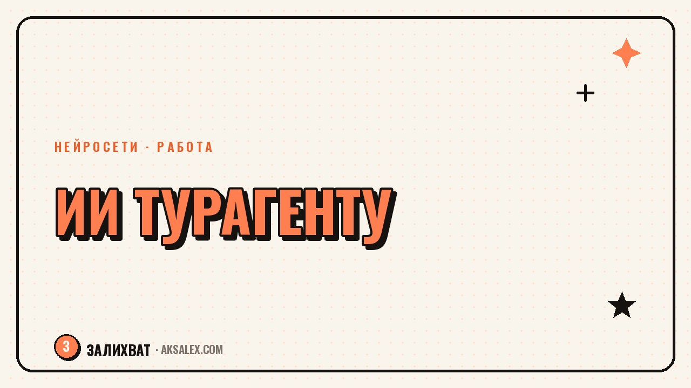

Нейросети для турагента: подбор туров и клиенты

Турагент сегодня одновременно менеджер по продажам, логист и служба поддержки. Клиент пишет в десять вечера с вопросом про визу, параллельно нужно свести три варианта тура в одно сравнение, а ещё написать пост для соцсетей о новом направлении. Нейросети не подберут тур вместо тебя и не заменят опыт, но снимают часть рутины: экономят время на поиске информации, черновиках ответов и оформлении описаний. Разберём, где ИИ реально помогает турагенту, а где лучше полагаться на свою голову и проверенных поставщиков.
Зачем турагенту вообще нейросети
Работа турагента строится на постоянном переключении между задачами: сегодня нужно свести варианты размещения по трём отелям, завтра - написать развёрнутый ответ клиенту с сомнениями насчёт страховки, послезавтра - собрать пост про горящий тур. Каждая из этих задач сама по себе не сложная, но в сумме съедает часы, которые можно было потратить на звонки и закрытие сделок.
Нейросеть в этой картине - не замена агента, а помощник на подхвате. Она быстро сворачивает длинный текст в сравнение, предлагает черновик ответа на типовой вопрос, помогает структурировать программу тура по дням. Экономия в основном идёт за счёт черновой работы: ты всё равно проверяешь факты, цены и даты вручную, потому что нейросеть может ошибиться или выдать устаревшую информацию.
ИИ хорош там, где нужно быстро получить черновик или свести информацию. Решение о туре, ответственность за цену и финальная подпись под предложением клиенту - всегда на агенте.
Подбор туров и маршрутов с помощью ИИ
Когда клиент даёт размытый запрос вроде «хотим к морю, недорого, но чтобы было интересно детям», нейросеть помогает быстро набросать несколько направлений под критерии: климат в нужный месяц, примерная ценовая категория, наличие анимации и детских бассейнов в отелях такого типа. Это не замена поиска по реальной базе туроператора, а способ за пару минут получить список гипотез, которые потом проверяешь по актуальным ценам.
Что можно доверить нейросети при подборе
- Набросать 5-7 вариантов направлений под бюджет и пожелания клиента
- Составить примерную программу тура по дням с логикой переездов
- Сравнить плюсы и минусы двух-трёх направлений по сезону и визовым требованиям
- Подготовить список вопросов, которые стоит уточнить у клиента перед подбором
- Сформулировать короткое описание отеля по характеристикам из брони
Важный момент: цены, наличие мест и визовые правила нейросеть не знает в реальном времени, она может называть устаревшие цифры или путать требования разных стран. Эти данные всегда берёшь из актуальной базы оператора или официальных источников, ИИ тут только помогает структурировать уже найденное.
Переписка с клиентами: шаблоны и быстрые ответы
Большая часть входящих сообщений от клиентов повторяется: что входит в стоимость, нужна ли виза, можно ли изменить даты, что с питанием в отеле. На такие вопросы нейросеть помогает собрать библиотеку развёрнутых, но не шаблонных ответов - достаточно один раз описать ей типовые ситуации и попросить несколько вариантов формулировок под разный тон: деловой, более тёплый, короткий для мессенджера.
Как это выглядит на практике
Агент описывает нейросети ситуацию: клиент переживает из-за задержки рейса и спрашивает, что делать. ИИ выдаёт черновик ответа с структурой - успокоить, объяснить порядок действий, предложить конкретный следующий шаг. Агент редактирует текст под свой стиль и конкретные детали брони, убирает общие фразы и отправляет. На весь процесс уходит пара минут вместо десяти-пятнадцати на ручное составление с нуля.
С сложными и конфликтными ситуациями, где клиент уже раздражён или дело идёт к возврату денег, лучше писать самому или использовать ИИ только для структуры, но не для финальных формулировок - здесь важны интонация и личная ответственность агента, которые нейросеть не считывает.
Какие нейросети выбрать для турагентства
Для турагента не нужен отдельный специализированный сервис - достаточно одной универсальной текстовой нейросети для черновиков и переписки, плюс отдельного инструмента для визуала, если нужны картинки к постам в соцсетях. Вот как эти варианты отличаются по задачам и цене.
| Инструмент | Для чего подходит | Формат оплаты |
|---|---|---|
| Универсальный текстовый чат-бот | Черновики ответов, описания туров, программы по дням | Есть бесплатный лимит, платная подписка от части сервисов |
| Нейросеть для изображений | Обложки постов, визуал для сторис про направления | Чаще платная подписка или пакет генераций |
| Голосовая озвучка | Аудиоверсии постов, голосовые рассылки по турам | Платная подписка, оплата по объёму символов |
| Таблицы и аналитика с ИИ | Сравнение туров, расчёт маржи по заявкам | Обычно встроено в офисные пакеты, доплата не нужна |
Начинать стоит с одного универсального инструмента и довести его использование до автоматизма в переписке и черновиках, а уже потом добавлять отдельные сервисы под визуал и голос - распыляться на пять подписок сразу смысла нет.
Типичные ошибки при использовании ИИ в турагентстве
Самая частая ошибка - отправлять клиенту ответ нейросети без проверки. ИИ может уверенно назвать неверную визовую норму или устаревшую цену, и это ляжет на репутацию агента, а не сервиса. Вторая ошибка - пытаться автоматизировать консультацию целиком, теряя при этом личный контакт, из-за которого клиент вообще выбрал работу с агентом, а не с сайтом-агрегатором.
- Копировать ответ нейросети клиенту без проверки фактов и цифр
- Использовать один и тот же шаблонный тон для всех клиентов подряд
- Доверять ИИ финальные цифры по стоимости и наличию мест
- Не указывать в промпте контекст сделки - в ответ приходит общий текст без деталей
- Забывать, что чувствительные и конфликтные ситуации агент ведёт сам
Третья ошибка - не редактировать текст под себя. Если клиенты получают от агента однотипные фразы, которые легко узнаются как сгенерированные, доверие снижается. Нейросеть даёт основу, но голос и манера должны оставаться узнаваемо твоими.
С чего начать внедрение
Проще всего начинать не с глобальной перестройки процессов, а с одной повторяющейся задачи. Например, неделю пробовать черновики ответов на типовые вопросы через нейросеть, оценить, сколько времени это реально экономит, и только потом подключать следующий сценарий - описания туров или программы по дням.
Через месяц такого точечного внедрения обычно становится понятно, какие задачи стоит оставить за собой полностью, а какие уверенно можно передавать на черновую обработку ИИ. Это честный способ увидеть реальную пользу, а не просто добавить ещё одну подписку в список расходов.
Частые вопросы
Заменит ли нейросеть турагента
Нет, подбор тура под конкретного клиента, переговоры с поставщиками и ответственность за сделку остаются за агентом. ИИ берёт на себя только черновую и повторяющуюся часть работы.
Можно ли доверять нейросети актуальные цены на туры
Нет, цены и наличие мест нужно проверять по актуальной базе оператора. Нейросеть может называть устаревшие или вымышленные цифры, если у неё нет доступа к реальным данным.
С какой нейросети лучше начать новичку в турбизнесе
Достаточно одной универсальной текстовой нейросети для черновиков ответов и описаний. Специализированные инструменты под визуал и голос подключаются позже, когда понятна реальная нагрузка.
Как не потерять личный контакт с клиентом из-за ИИ
Используй нейросеть для черновика, но всегда редактируй текст под свой стиль и конкретные детали сделки. Конфликтные и чувствительные ситуации лучше вести самостоятельно, без шаблонных формулировок.
Сколько времени реально экономит ИИ турагенту
Точная цифра зависит от объёма переписки и количества повторяющихся вопросов, но на черновиках ответов и описаниях туров агенты обычно замечают экономию уже в первую неделю использования.
Раз тема оказалась полезной, вот что почитать следующим. Как начать вести блог на Rutube: настройка канала, форматы и продвижение с нуля.
Читать статью →а не вручную